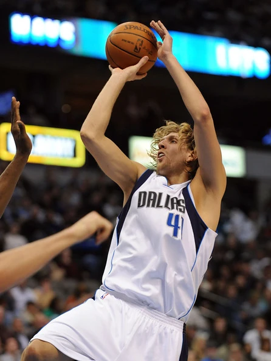
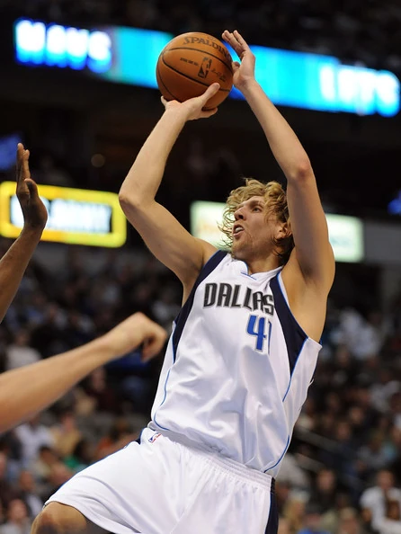

Courtesy: The Dallas Morning News
Description
These images are different images of Dirk Nowitzki in different situations. He is one of my favorite players who faced against all odds and beat the Miami Heat superteam in 2011.
Courtesy: The Dallas Morning News
These images are different images of Dirk Nowitzki in different situations. He is one of my favorite players who faced against all odds and beat the Miami Heat superteam in 2011.